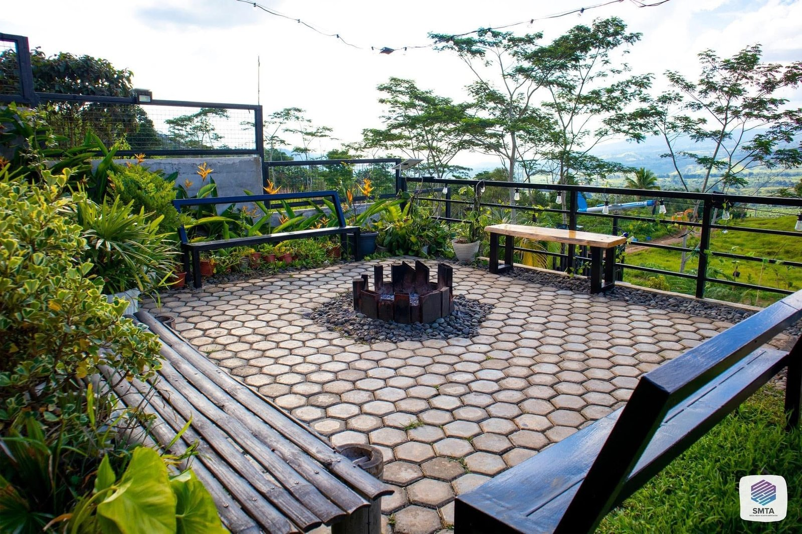
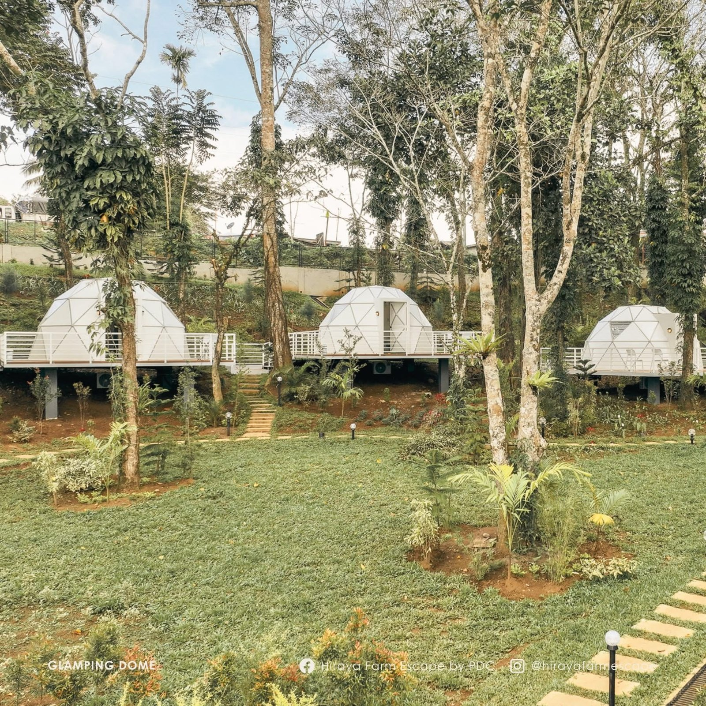
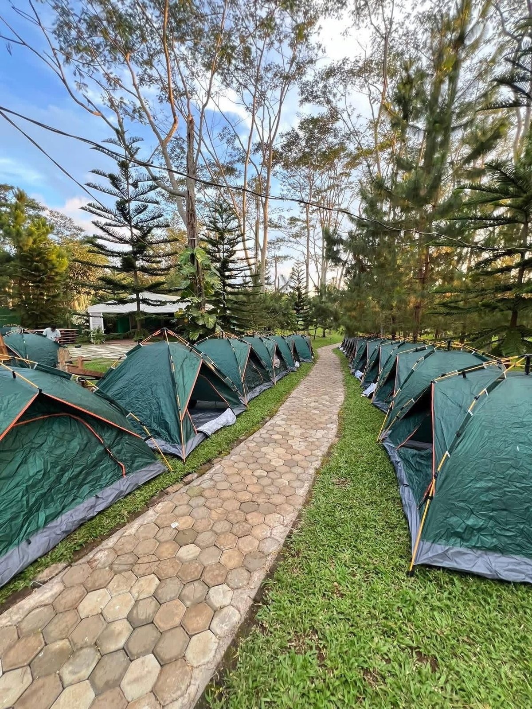
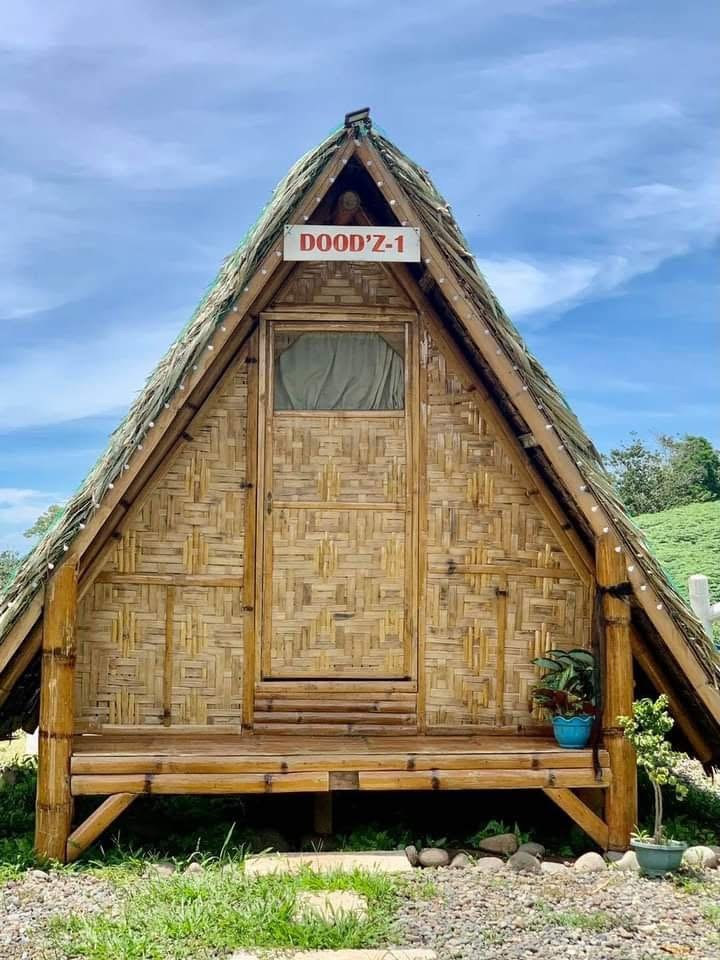
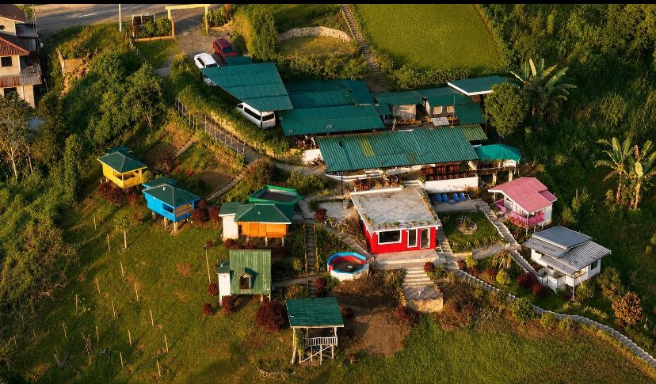
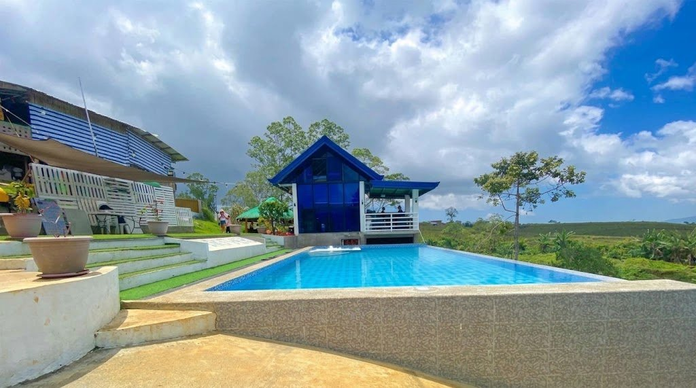
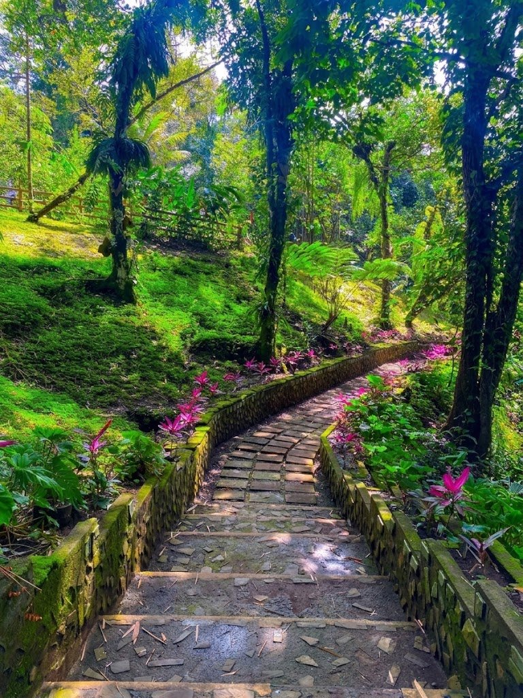
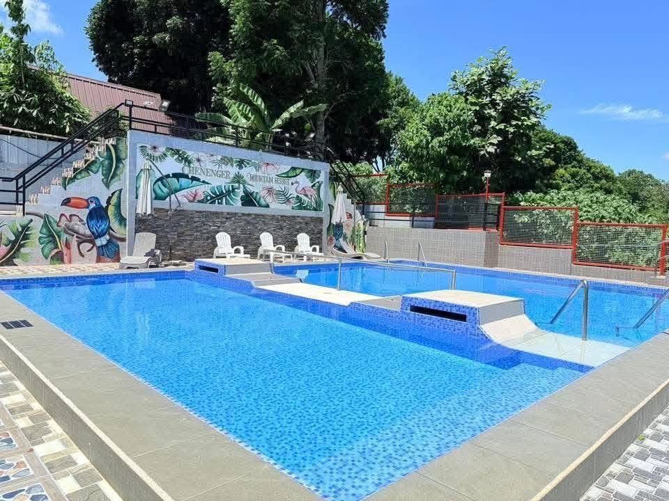
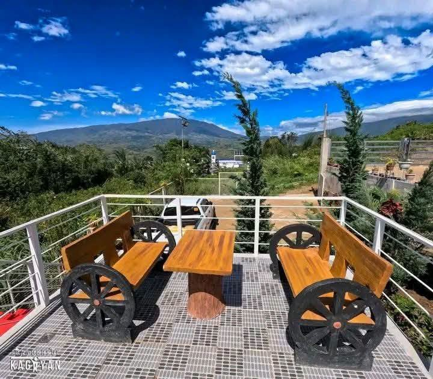
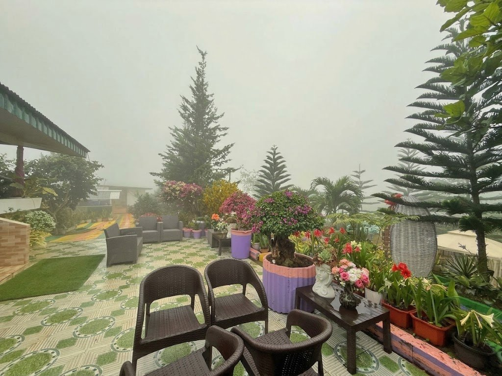

Explore Claveria
14 places
Staycations & Resorts
Cabins, campsites, farm resorts and vacation houses in the Claveria highlands.
 5 photos
5 photosBaqs&Bonfires
Exclusive mountain campground with bonfire nights Sitio Sumpong, Brgy. Madaguing, Claveria, Misamis Oriental 5 photos
5 photosVictoria's Haven
Affordable, safe & clean rest house near the Claveria–Gingoog route San Roque, Doalnara, Claveria, Misamis Oriental 5 photos
5 photosClaveria Wooden Cabins
Cozy wooden cabins in the countryside Barangay Aposkahoy, Claveria, Misamis Oriental
5 photosRomualda's Vacation House
Private retreat with a pool overlooking the mountains Barangay Mat-i, Claveria, Misamis Oriental
4 photosHiraya Farm Escape
Highland leisure farm with ATV, go-karts & rainbow slides Barangay Lanise, Claveria, Misamis Oriental 5 photos
5 photosApoVista Forest Park and Campsite
Forest park & overnight campsite (home of Lantawon Falls) Sitio Lantawan, Aposkahoy, Claveria, Misamis Oriental
5 photosCamp Zion Claveria
Weekend camping & bonding destination Barangay Panampawan, Claveria, Misamis Oriental
3 photosPayag ni Kuya
Cozy countryside retreat with nipa huts Barangay Patrocinio, Claveria, Misamis Oriental
5 photosJILA's Smallville
“Just Imagine Life Away from the City” — flower farm & photo spot Sitio Macupa, Zone 6, Barangay Lanise, Claveria, Misamis Oriental
4 photosPBrother's Mountain View Resort
Intimate hillside retreat with pool & mountain views Zone 4, Lower Lanise, Claveria, Misamis Oriental
5 photosJanopolan Nature's Spring
Claveria's classic spring & pool eco-tourism retreat Sitio Janopolan, Barangay Poblacion, Claveria, Misamis Oriental
5 photosChenenger Mountain Resort
Affordable home-style escape for barkada & family outings Barangay Lanise, Claveria, Misamis Oriental
4 photosCabinscape Ridge Resort
Nordic-inspired glamping in the misty highlands Zone 1, Brgy. Mat-i, Claveria, Misamis Oriental
3 photosAikeeko Farmview Resort
Floral farm turned mountain resort — “farmcations” & digital detox Purok 4, Brgy. Lanise, Claveria, Misamis OrientalNo places match your search. Try another name or barangay.